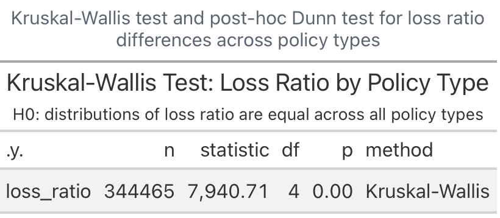
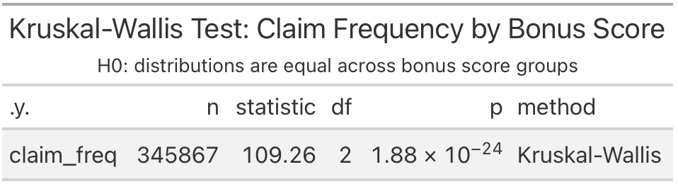
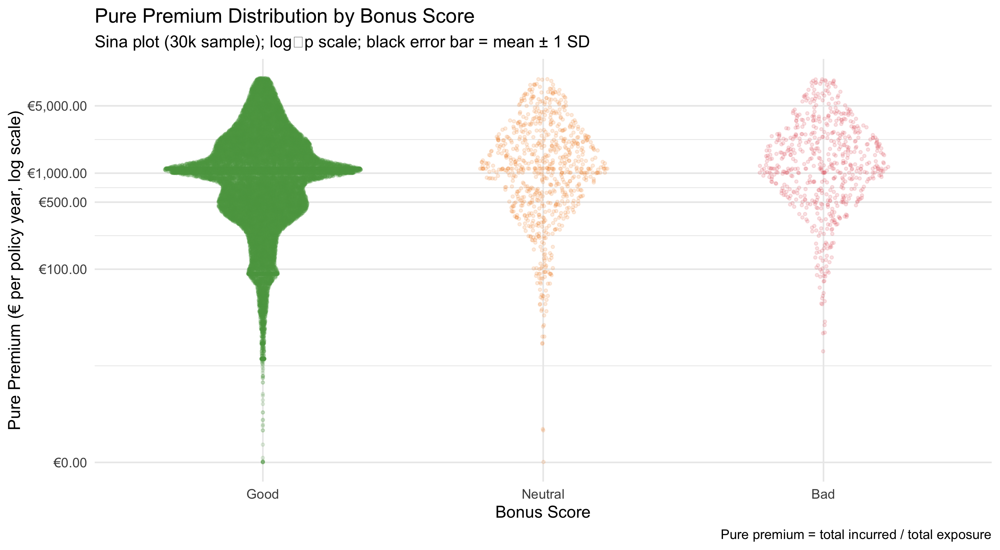

Motor Insurance Portfolio
Executive Summary: Profitability & Volatility Drivers
2026-05-16
Portfolio Composition: Policy, Bonus & Geography


CC dominates policy mix. Over 90% of policyholders hold a “Good” bonus score, reflecting the insurer’s underwriting selectivity. Portfolio is predominantly inland and urban, indicating concentrated traffic-related risk.
Loss Ratio by Policy Type



Kruskal-Wallis confirms loss ratios differ significantly across all policy types (p < 0.001). Comprehensive No Excess spreads well past 100%. Third-party policies cluster low and stable. Nearly all pairwise contrasts are statistically significant (***).
Bonus Score: Claim Frequency & Pure Premium



“Bad” bonus policyholders show materially higher claim frequencies and a fatter pure premium tail. Even “Neutral” carries more risk than “Good”. The sina plot on a log scale reveals the full distributional structure.
Vehicle Age vs Claim Severity

Newer vehicles (0–5 yrs) attract the highest mean claim severity across both fuel types meaning higher replacement costs. Severity falls sharply with vehicle age.